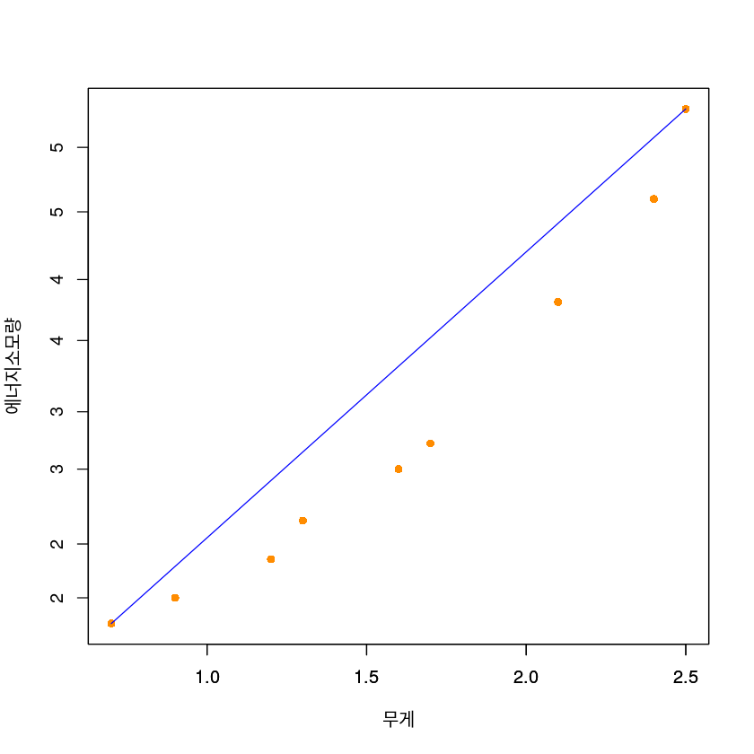
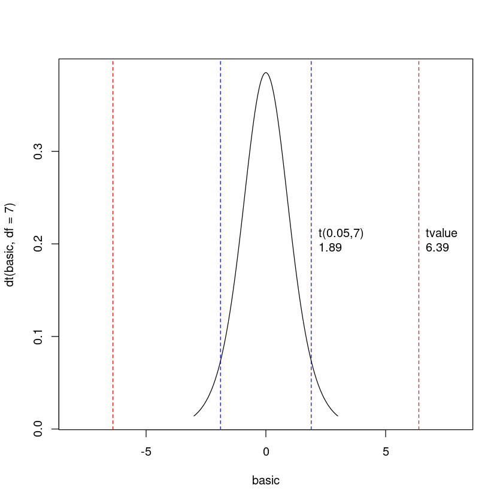
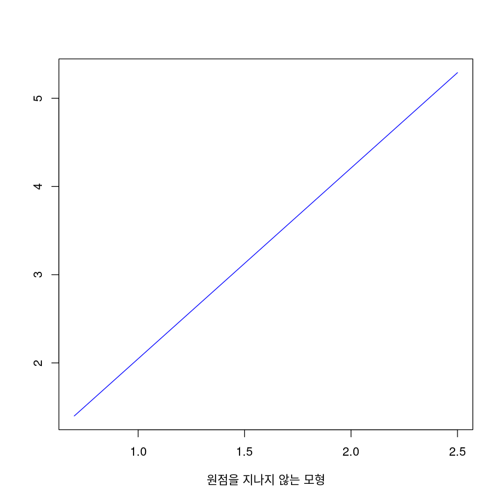
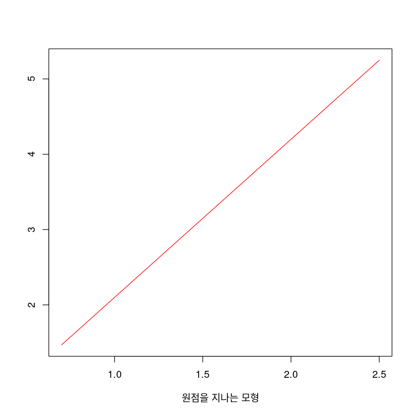

dt <- data.frame(x = c(0.9,1.3,2.1,2.5,2.4,1.7,0.7,1.2,1.6),
y = c(2.0,2.6,4.3,5.8,5.1,3.2,1.8,2.3,3.0))
dt| x | y |
|---|---|
| <dbl> | <dbl> |
| 0.9 | 2.0 |
| 1.3 | 2.6 |
| 2.1 | 4.3 |
| 2.5 | 5.8 |
| 2.4 | 5.1 |
| 1.7 | 3.2 |
| 0.7 | 1.8 |
| 1.2 | 2.3 |
| 1.6 | 3.0 |
SEOYEON CHOI
September 21, 2022
고급회귀분석 과제, CH03, CH04
과제1
풀이 :
R 이용하지 않고 직접 계산. (R로 단순 계산은 해도 됨)
모든 문제에는 풀이가 있어야 함.
풀이 없이 답만 있는 경우 ’0’점 처리.
제출 방법 :
직접 제출 (607호) 또는 스캔, 사진, tex 작업, 문서 작업 등 후 pdf로 변환 후 제출
pdf 아닌 경우 미제출 처리
Answer
\(SSE = \sum(y_i - \hat{y_i})^2 = \sum(y_i - \hat{\beta_1}x_i)^2\)
\(SSE' = 0 = \sum(-x_i)2(y_i - \hat{\beta_1}x_i )\)
\(\sum(-x_iy_i) + \sum(x_i^2\hat{\beta_1}) = 0\)
\(\hat{\beta_1} = \frac{\sum(x_iy_i)}{\sum(x_i^2)}\)
| 무게 X(단위: 1,000kg) | 에너지소모량 Y(단위: 1,000btu) |
|---|---|
| 0.9 | 2.0 |
| 1.3 | 2.6 |
| 2.1 | 4.3 |
| 2.5 | 5.8 |
| 2.4 | 5.1 |
| 1.7 | 3.2 |
| 0.7 | 1.8 |
| 1.2 | 2.3 |
| 1.6 | 3.0 |
dt <- data.frame(x = c(0.9,1.3,2.1,2.5,2.4,1.7,0.7,1.2,1.6),
y = c(2.0,2.6,4.3,5.8,5.1,3.2,1.8,2.3,3.0))
dt| x | y |
|---|---|
| <dbl> | <dbl> |
| 0.9 | 2.0 |
| 1.3 | 2.6 |
| 2.1 | 4.3 |
| 2.5 | 5.8 |
| 2.4 | 5.1 |
| 1.7 | 3.2 |
| 0.7 | 1.8 |
| 1.2 | 2.3 |
| 1.6 | 3.0 |
Answer
Answer
| i | x | y | x_barx | y_bary | x_barx2 | y_bary2 | xy |
|---|---|---|---|---|---|---|---|
| <int> | <dbl> | <dbl> | <dbl> | <dbl> | <dbl> | <dbl> | <dbl> |
| 1 | 0.9 | 2.0 | -0.7 | -1.3444444 | 0.49 | 1.8075309 | 0.94111111 |
| 2 | 1.3 | 2.6 | -0.3 | -0.7444444 | 0.09 | 0.5541975 | 0.22333333 |
| 3 | 2.1 | 4.3 | 0.5 | 0.9555556 | 0.25 | 0.9130864 | 0.47777778 |
| 4 | 2.5 | 5.8 | 0.9 | 2.4555556 | 0.81 | 6.0297531 | 2.21000000 |
| 5 | 2.4 | 5.1 | 0.8 | 1.7555556 | 0.64 | 3.0819753 | 1.40444444 |
| 6 | 1.7 | 3.2 | 0.1 | -0.1444444 | 0.01 | 0.0208642 | -0.01444444 |
| 7 | 0.7 | 1.8 | -0.9 | -1.5444444 | 0.81 | 2.3853086 | 1.39000000 |
| 8 | 1.2 | 2.3 | -0.4 | -1.0444444 | 0.16 | 1.0908642 | 0.41777778 |
| 9 | 1.6 | 3.0 | 0.0 | -0.3444444 | 0.00 | 0.1186420 | 0.00000000 |
\(\hat{\beta_1} = \frac{S_{xy}}{S_{xx}}\)
\(\hat{\beta_0} = \bar{y} - \hat{\beta_1}\bar{x}\)
Answer
plot(y~x,
data = dt,
xlab = "무게",
ylab = "에너지소모량",
pch = 16,
cex = 1,
col = "darkorange")
par(new=TRUE)
plot(-0.1156783 + 2.162577*x~x,
data = dt,
xlab = "",
ylab = "",
pch = 16,
cex = 1,type='l',
col = "blue")
\(r_{xy} = \frac{S_{xy}}{\sqrt{S_{xx}S_{yy}}}\)
\(R^2 = \frac{SSR}{SST} = r^2\)
SST = 16.00222
SSR = 15.24617
SSE = 0.7560566| df | sum of square | mean of square | F value | p value | |
|---|---|---|---|---|---|
| x | 1 | 15.24617 | 15.24617 | 141.1584 | 1.614672e-07 |
| Residuals | 7 | 0.7560522 | 0.1080075 |
Answer
\[\hat{\beta_0} \pm t_{(\alpha/2,n-2)}\hat{\sigma} \sqrt{\frac{1}{n} + \frac{\bar{x}^2}{S_{xx}}}\]
cat("Beta0 confidence level",beta0 + qt(0.025, 7) * sqrt((MSE)*(1/9 + mean(dt$x)^2/sum((dt$x - mean(dt$x))^2))),"~",beta0 + qt(0.975, 7) * sqrt((MSE)*(1/9 + mean(dt$x)^2/sum((dt$x - mean(dt$x))^2))))Beta0 confidence level -0.8514415 ~ 0.620085\[\hat{\beta_1} \pm t_{(\alpha/2,n-2)} \sqrt{\frac{MSE}{S_{xx}}}\]
cat("Beta1 confidence level",beta1 + qt(0.025, 7) * sqrt((MSE)/sum((dt$x - mean(dt$x))^2)),'~',beta1 + qt(0.975, 7) * sqrt((MSE)/sum((dt$x - mean(dt$x))^2)))Beta1 confidence level 1.732168 ~ 2.592986\[\text{t value} = \frac{\hat{\beta_1} - 1}{s.e(\hat{\beta_1})}\]
figure로 표현
par(mfrow=c(1,1))
basic <- seq(-3,3,by=0.01)
plot(basic,dt(basic,df=7),type="l",xlim=c(-8,8))
abline(v=Tvalue,col="red",lty=2)
abline(v=qt(0.95,7),col="blue",lty=2)
text(x=Tvalue, y=c(0.2), labels=c("tvalue\n6.39"), pos=4, col="black")
text(x=qt(0.95,7), y=c(0.2), labels=c("t(0.05,7)\n1.89"), pos=4, col="black")
abline(v=-Tvalue,col="red",lty=2)
abline(v=qt(0.05,7),col="blue",lty=2)
\[\hat{\mu}_0 = \hat{\beta_0} + \hat{\beta_1} x_0\]
cat("무게가 3,000kg 이 되는 차량의 평균 에너지 소모량을 예측해보니 무게가 1,000kg이 되는 차량의 에너지 소모량의",(beta0 + beta1 * 3)/(beta0 + beta1 * 1),"배 였다.")무게가 3,000kg 이 되는 차량의 평균 에너지 소모량을 예측해보니 무게가 1,000kg이 되는 차량의 에너지 소모량의 3.113028 배 였다.Answer
무게가 3,000kg 이 되는 차량의 평균 에너지 소모량은 6.372052 이다.\[\hat{Var(\hat{\mu}_0}) = \sigma (\frac{1}{n} + \frac{(x_0 - \bar{x})^2}{S_{xx}})\]
\(S_{xx}\)
\(\hat{Var(\hat{\mu_0})}\)
\(\hat{\sigma}_{\hat{\mu_0}}\)
hat sigma(hat mu zero) = 0.483846\(\hat{\mu_0} \pm t_{(\alpha/2,(n-2))}\hat{\sigma_{\hat{\mu_0}}}\)
개별 y값의 90% 신뢰구간은 ( 5.455369 ~ 7.288735 ) 이다.Answer
합이 0인 것을 확인했다.
잔차들의 \(x_i\) 에 대한 가중합, \(\sum x_ie_i\)이 0인 것을 확인했다.
잔차들의 \(\hat{y}\)에 대한 가중합 \(\sum \hat{y}_ie_i\)이 0인 것을 확인했다.
Answer
\(\hat{\beta_1} = \frac{\sum(x_iy_i)}{\sum(x_i^2)}\)
Answer
\[\hat{\beta_1} \pm t_{(\alpha/2,n-1)}\frac{\hat{\sigma}}{\sqrt{S_{xx}}}\]
cat("원점을 지나는 회귀직선에서 회귀계수(기울기)의 90% 신뢰구간은 (",beta1_0 - qt(0.95,8) * sigma_0/sqrt(3.26),"~",beta1_0 + qt(0.95,8) * sigma_0/sqrt(3.26),")이다.")원점을 지나는 회귀직선에서 회귀계수(기울기)의 90% 신뢰구간은 ( 1.779515 ~ 2.418964 )이다.Answer
\(R^2 = \frac{SSR}{SST} = r^2\)
원점을 지나는 회귀직선의 결정계수는 0.9933922 로 약 0.99 % 였다.Answer
원점을 포함하지 않는 회귀직선의 결정계수는 0.9527533 로, 원점을 포함하는 회귀직선의 결정계수인 0.9933922 보다 작다.cat("원점을 포함하지 않는 회귀직선의 평균재곱오차는 ",MSE,"이며, 원점을 포함하는 회귀직선의 평균제곱오차는 ",MSE_0,"이다. 원점을 포함하는 모형의 오차가 조금 더 작았다.")원점을 포함하지 않는 회귀직선의 평균재곱오차는 0.1080081 이며, 원점을 포함하는 회귀직선의 평균제곱오차는 0.0963731 이다. 원점을 포함하는 모형의 오차가 조금 더 작았다.cat("원점을 포함하지 않는 회귀직선의 F 값은 ",Fvalue,"로, 원점을 포함하는 회귀직선의 F 값인 ",Fvalue_0,"보다 작다. 따라서 원점을 포함한 모델이 회귀모형애 의해 설명되는 부분이 더 크며, 오차항에 기인된 부분이 더 작다.")원점을 포함하지 않는 회귀직선의 F 값은 141.1577 로, 원점을 포함하는 회귀직선의 F 값인 1202.608 보다 작다. 따라서 원점을 포함한 모델이 회귀모형애 의해 설명되는 부분이 더 크며, 오차항에 기인된 부분이 더 작다.cat("원점을 포함하지 않는 회귀직선의 p value 는 ",df(Fvalue,1,7),"로, 원점을 포함하는 회귀직선의 p value인",df(Fvalue_0,1,8),"과 같이 p value이 충분히 작아 두 모형이 모두 유의함을 알 수 있었다.")원점을 포함하지 않는 회귀직선의 p value 는 1.614709e-07 로, 원점을 포함하는 회귀직선의 p value인 1.728622e-12 과 같이 p value이 충분히 작아 두 모형이 모두 유의함을 알 수 있었다.plot(beta0 + beta1*x~x,
data = dt,
xlab = "원점을 지나지 않는 모형",
ylab = "",
pch = 16,
cex = 1,type='l',
col = "blue")
plot(beta1_0*x~x,
data = dt,
xlab = "원점을 지나는 모형",
ylab = "",
pch = 16,
cex = 1,type='l',
col = "red")

plot(epsilon,
xlab = "원점을 지나지 않는 모형",
ylab = "",
pch = 16,
cex = 1,
col = "blue")
plot(epsilon_0,
xlab = "원점을 지나는 모형",
ylab = "",
pch = 16,
cex = 1,
col = "red")
Shapiro-Wilk normality test
data: beta0 + beta1 * dt$x
W = 0.95279, p-value = 0.7207
Shapiro-Wilk normality test
data: beta1_0 * dt$x
W = 0.95279, p-value = 0.7207ANOVA table 비교
| y=beta0+beta1x | df | sum of square | mean of square | F value | p value |
|---|---|---|---|---|---|
| x | 1 | 15.24617 | 15.24617 | 141.1584 | 1.614672e-07 |
| Residuals | 7 | 0.7560522 | 0.1080075 |
| y=beta1x | df | sum of square | mean of square | F value | p value |
|---|---|---|---|---|---|
| x | 1 | 115.89906559088 | 115.89906559088 | 1202.60806139735 | 1.728622e-12 |
| Residuals | 8 | 0.77098479088 | 0.09637309886 |
\[\hat{beta}_0 ~ N\big( \beta_0 , \sigma^2\big( \frac{1}{n} + \frac{\bar{x}^2}{S_{(xx)}} \big) \big)\]
Answer
\(\hat{\beta_0}\)
\(= \bar{y} - \hat{\beta_1} \bar{x} = \bar{y} - \frac{S_{xy}}{S_{xx}}\bar{x}\)
\(= \bar{y} - \frac{\sum(x_i - \bar{x})(y_i - \bar{y})}{S_{xx}}\bar{x}\)
\(= \bar{y} - \sum\frac{(x_i-\bar{x})y_i\bar{x}-(x_i - \bar{x})\bar{y}\bar{x}}{S_{xx}}\)
\(= \bar{y} - \sum\frac{(x_i - \bar{x})}{S_{xx}}y_i\bar{x} - \frac{\bar{x}\bar{y}}{S_{xx}}\sum(s_i - \bar{x})\)
\(= \bar{y} - \sum\frac{(s_i - \bar{x})}{S_{xx}}y_i\bar{x}\)
\(\approx \bar{y} - \sum a_iy_i\bar{x}\)
\(E(\hat{\beta_0})\)
\(=\bar{y} - \bar{x}\sum a_i E(y_i)\)
\(=\bar{y} - \bar{x}\sum a_i (\beta_0 + \beta_1 x_i)\)
\(=\bar{y} - (\beta_0\bar{x}\sum a_i + \beta_1 \bar{x} \sum a_i x_i)\)
\(=\bar{y} - \beta_1\bar{x} = \beta_0\)
\(\star \sum a_i = \sum\frac{x_i - \bar{x}}{S_{xx}} = \frac{1}{S_{xx}}\sum(x_i-\bar{x} )= 0\)
\(\star \sum a_i x_i = \sum\frac{(x_i - \bar{x})x_i}{S_{xx}}= \frac{1}{S_{xx}} \sum(x_i - \bar{x}(x_i - \bar{x} + \bar{x} = \frac{1}{S_{xx}} \sum(x_i - \bar{x})^2 = 1\)
\(Var(\hat{\beta_0})\)
\(=Var(\bar{y} - \bar{x}\sum a_i x_i)\)
\(=var(\frac{y_i}{n} - \bar{x}\sum a_i y_i)\)
\(=\frac{\sigma^2}{n} - \bar{x}^2\sigma^2\sum a_i^2\)
$ = - $
\(= \sigma^2(\frac{1}{n} - \frac{\bar{x}^2}{S_{xx}})\)
\(\star \sum a_i^2 = \sum\frac{(x_i - \bar{x})^2}{S_{xx}} = \frac{1}{S_{xx}^2}\sum(x_i - \bar{x})^2 = \frac{1}{S_{xx}}\)